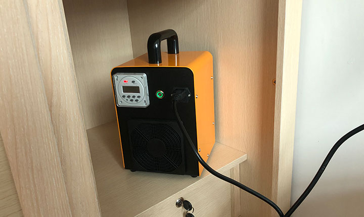
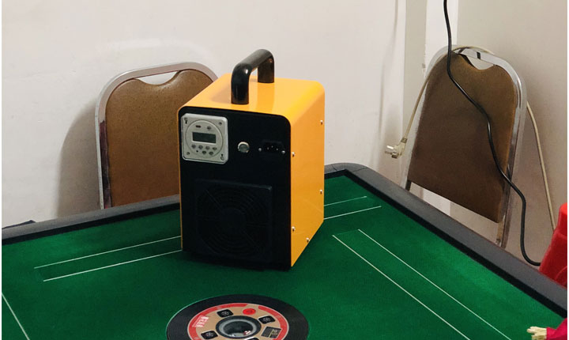

Successful Installations
Our flow3 sterilizers are used in many places. The following are some customer cases. The deodorizing effect and bacteria removal effect are recognized by customers.

Wardrobe disinfection

Car disinfection
